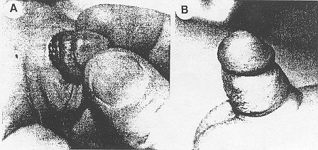

THE CIRCUMCISION REFERENCE LIBRARY
PENILE DENUDATION INJURIES AFTER CIRCUMCISION
From the Departments of Plastic Surgery and Urology, Division of Pediatric Urology, Mount Sinai Medical Center, New York, New York
ABSTRACT
We present 3 cases of iatrogenic phallic denudation that were managed successfully nonoperatively. The concept of conservative, nonoperative management should be considered in denudation injuries.
Despite current doubts about its advisability neonatal circumcision still is performed almost routinely in many hospitals. Circumcision is not a completely benign procedure. Iatrogenic injuries vary, and the management should be tailored according to the age of the patient and type of injury. We present 3 cases of iatrogenic penile denudation after circumcision. Modes of therapy are discussed.
CASE REPORTS
Case 1. A white male newborn was seen within hours after denudation of the penis secondary to ritual neonatal circumcision by a mohel. The injury consisted of sloughing of most of the skin of the penis (part A of figure). Treatment consisted of saline dressing 3 times a day. Complete regeneration of the penile skin occurred within 6 weeks of initiation of treatment. Cosmetic results 3 years later were excellent (part B of figure).
|  Case 1. A. penile denudation after circumcision. B. result 3 years later |
Case 2. A white male newborn was seen for necrosis of the shaft of the penis secondary to localized infection 1 day after circumcision by a mohel. Treatment consisted of proper systemic antibiotics and local wound care, that is saline dressing 3 times daily. Cosmetic results were excellent.
Case 3. A 32-year-old Hispanic diabetic man under went circumcision. Postoperatively, infection at the suture line caused dehiscence and denudation of a third of the phallus. (a distance of 3 cm.) Wet to dry saline dressings were the sole treatment. The skin regenerated in 4 weeks with satisfactory cosmetic results.
DISCUSSION
The concept of skin regeneration in the denuded phallus is valid and is not limited to children as illustrated by case 3. Before resorting to complicated reconstructive procedures, conservative management should be considered a satisfactory option in select cases.
A review of the literature revealed relatively few reports of iatrogenic injuries, given the high rate of circumcision. Of the reports available in the literature only two described a denudation injury. In 1 case the injury was treated with surgical burial of the penis in the thigh.1 Two reports have alluded to successful conservative management, although the defects mentioned in one were ulcerations of the penile skin and not true denudations.2 In another report a 5 mm. band of denuded phallus was treated conservatively in a newborn, and denudation of the phallus and tesies were closed primarily.3 Others studies focus on gangrene,4 necrotizining fasciitis,5,6 necrosis of the glans,7 traumatic partial amputation of the glans,8,9 necrosis of part of the penile shaft skin2 and iatrogenic burn of the penis, requiring reconstruction with a pedicle scrotal skin flap.10 Septicemia also has been reported as a complication of circumcision.11,12
Our cases exemplify 3 general principles of denudation injuries: 1) In the newbonrn period even complete sloughing of the skin with superficial necrosis or total surgical degloving of the shaft (not affecting the corpora, urethra or glans) can be managed conservatively with excellent cosmetic results, 2) denudation of the penile shaft can be managed conservatively in adults only if the defect is less than half the of the total penile skin and 3) complete denudation in the adult should be managed with split-thickness skin grafting for optimal cosmetic and functional results. It is important to remember that a denudation injury resulting from circumcision does not dictate necessarily the need for skin grafting or a second operative procedure for repair.
REFERENCES
http://www.cirp.org/library/complications/sotolongo1/